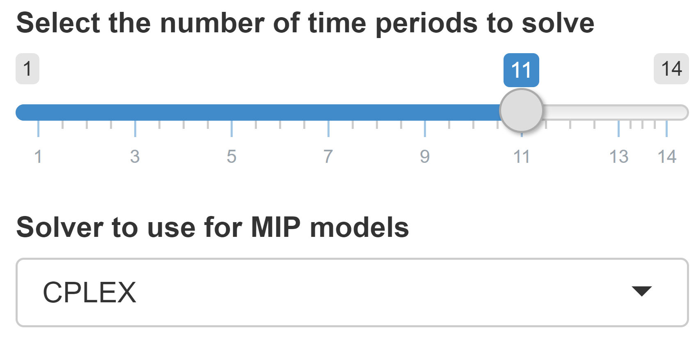

MIRO expects your renderer names to follow this strict convention. Note that the symbol name in your renderer name should be converted to all lowercase. Even if the symbol in GAMS is called optSched, the renderer function name should be mirorenderer_optschedOutput and renderMirorenderer_optsched.
Advanced Configuration
Custom Renderers
GAMS MIRO allows you to use your own custom renderers for your datasets. In this section we will show you how to create really sophisticated custom graphics.

How to use a custom renderer
In order to visualize a dataset, you will need to write two functions: a placeholder where your graphs etc. will later be rendered as well as the rendering function itself. To learn more about the concepts of this dual component approach, visit the website for the R Shiny framework that GAMS MIRO is based upon: https://shiny.rstudio.com/. In particular, we are using Shiny Modules to realize the interface between MIRO and your custom renderer functions. The template for the two components of every custom renderer is as follows:
mirorenderer_<symbolName>Output <- function(id, height = NULL, options = NULL, path = NULL){
ns <- NS(id)
}
renderMirorenderer_<symbolName> <- function(input, output, session, data, options = NULL, path = NULL, rendererEnv = NULL, views = NULL, attachments = NULL, outputScalarsFull = NULL, ...){
}
Note that you need to replace <symbolName> with the name of the GAMS symbol you want to use this renderer for. Let's go through this code step by step. As mentioned, for each custom renderer we need to specify two functions: one that generates the placeholder and one that fills this placeholder with data. The name of the placeholder function must be postfixed with "Output" and the name of the function that specifies the actual rendering must be prefixed with the keyword "render". Let's get back to our transport example. We would like to see the flow of goods visualized on a map. The GAMS symbol that contains the flow data is called optSched. Thus, our initial template looks like this:
mirorenderer_optschedOutput <- function(id, height = NULL, options = NULL, path = NULL){
ns <- NS(id)
}
renderMirorenderer_optsched <- function(input, output, session, data, options = NULL, path = NULL, rendererEnv = NULL, views = NULL, attachments = NULL, outputScalarsFull = NULL, ...){
}
Note:
Note:
Custom renderer scripts must be located in a folder named: renderer_<modelname> in your model directory. The name of the renderer file should be: mirorenderer_<symbolname>.R.
Both functions take a number of parameters. Let's start with the placeholder function: Each custom renderer has its own ID. In order to avoid name collisions with other custom renderers or functions of GAMS MIRO, we need to prefix our input and output elements with this ID. How should we prefix our custom input and output functions, though? Fortunately, Shiny provides us with the function: NS(). This function takes the ID of our custom renderer as its input and returns a function (functions that return functions are often called closures in R) that does the prefixing for us. Thus, whenever we want to specify a new input or output element, we simply hand the ID we would like to use for this element over to this prefixing function (which in our case is bound to the ns variable). We can also specify a height for our renderer as well as the path where the renderer files are located. We can also pass additional options to our renderer functions.
Let's get back to our example. As we would like to visualize our optimized schedule on an interactive map, we choose the popular Leaflet library. Fortunately, there is already an R/Shiny interface for this library: Leaflet for R. This R package comes with the two functions: leafletOutput() that generates the placeholder and renderLeaflet() that renders a Leaflet map object created by the leaflet() function which takes our dataframe as its first argument. So let's put the pieces together and extend our code:
mirorenderer_optschedOutput <- function(id, height = NULL, options = NULL, path = NULL){
ns <- NS(id)
leaflet::leafletOutput(ns("map"), height = height)
}
renderMirorenderer_optsched <- function(input, output, session, data, options = NULL, path = NULL, rendererEnv = NULL, views = NULL, attachments = NULL, outputScalarsFull = NULL, ...){
output$map <- leaflet::renderLeaflet(leaflet::leaflet(data))
}Note that we used the aforementioned ns() function to prefix the ID ("map") that we chose for our Leaflet element. Just like any other placeholder element, the function leafletOutput() generates an element that can be accessed via the list-like output object.
Inside our rendering function we assign this object the
Leaflet map that is created by the
renderLeaflet() function. In case you find the
whole concept of having an output function, a rendering
function, an output object etc. still very confusing, you
should take a look at the
official tutorial series
for the Shiny framework.
To summarize: elements that generate data can be accessed
by the input object; elements that transform
data to some form of visualization via the
output object and any user-specific information
via the session object.
Note:
If you use functions from packages other than shiny, DT, rhandsontable, dplyr, readr or the R base packages, make sure you specify the package/namespace that exports this function. In our example, the functions leafletOutput, renderLeaflet and leaflet are exported from the package leaflet. So we need to use the double colon operator to access them (e.g. leaflet::leafletOutput).
The data that you want to visualize is supplied to your rendering function by the data argument - an R tibble, a data structure that is very similar to a Data Frame. In case you specified additional datasets to be communicated with your custom renderer, data will be a named list of tibbles where the names are the GAMS symbol names. In addition, the values of all input and output scalars can be accessed via the argument outputScalarsFull (a tibble with the columns scalar, description, value). The function argument path is a string (a one-dimensional character vector) that specifies the absolute path to your renderer_<modelname> directory. This is useful if you want to include external files in your custom renderer functions. Optional parameters that you want to pass to the renderer can be accessed via the argument options - a (nested) list.
Tip:
The list options always has a nested list
with the key _metdata_, which gives you
access to the metadata of the symbol to render, such
as the symbol type (set, parameter, ...) and header
information (header name, alias, type). For example,
the symbol type can be accessed as follows:
options[["_metadata_"]][["symtype"]].
Now that we are familiar with the template that every custom renderer builds upon, we are still missing one fundamental concept so that we can use our custom renderer: binding the renderer to dataset(s) we wish to visualize.
This binding of GAMS parameter to renderer function is specified - just like any other renderer binding - in the <modelname>.json file; more precisely the dataRendering section. Let's assume that in our transportation example the GAMS parameter that specifies the optimal schedule is defined as optSched(lngp, latp, lngm, latm, plant, market) where (lngP,latP) and (lngm, latm) are the coordinates of the plants and markets respectively. Our transport.json file should then look like this:
{
"dataRendering":{
"optSched":{
"outType":"mirorenderer_optsched",
"height":"700",
"options":{
"title":"Optimal transportation schedule"
}
}
}
}As you can see we bound the GAMS parameter optSched to our new custom renderer mirorenderer_optsched. Furthermore, we specified a parameter: title that can be accessed by our custom renderer via the options list.
If we decided to run our MIRO app now, we still would not be able to see anything other than a blank area. Thus, we will need to fill our renderer with some life:
mirorenderer_optschedOutput <- function(id, height = NULL, options = NULL, path = NULL){
ns <- NS(id)
tagList(
textOutput(ns("title")),
leaflet::leafletOutput(ns("map"))
)
}
renderMirorenderer_optsched <- function(input, output, session, data, options = NULL, path = NULL, rendererEnv = NULL, views = NULL, attachments = NULL, outputScalarsFull = NULL, ...){
output$title <- renderText(options$title)
output$map <- leaflet::renderLeaflet(leaflet::leaflet(data) %>%
leaflet::addTiles() %>%
leaflet::addMarkers(~lngp, ~latp, label = ~plant)
)
}We have added a new placeholder for the title. Note the use of the tagList() function. Since every R function has a single return value which is either the last evaluated expression of the function or the argument to the first return() function that is encountered in the function body, we need to return a list object. A tagList() is simply a list with an additional attribute to identify that the elements are html tags.
Within our rendering function, we set the title, add the default OpenStreetMap tiles as well as some markers for our plants.
Note:
The syntax ~lngp that you see here is simply a shorthand for data$lngp - the pipe operator a(x) %>% b(y) a shorthand for tmp <- a(x); b(tmp, y)

If you read until this point, you might have noticed that there is a parameter in the renderer function that we did not talk about yet: rendererEnv. This parameter is a static R environment that is persistent across different calls to the renderer function. Each time the data of your widget is updated (e.g. due to the user loading a new scenario from the database), your renderer function is called. One case where this can become problematic is when you make use of observers in your renderer functions. Every time your renderer function is called, all observers are re-registered, which leads to duplicated observers. To avoid this problem, you must ensure that observers are cleaned up when they are no longer needed. You do this by assigning them to the rendererEnv environment. An example where this is extensively used is the model tsp, which can be found in the MIRO model library.
You now know everything you need in order to get started writing your own custom renderers! Congratulations! In case you create a new renderer that you would like to share so that others can benefit from your work as well, please contact us!
Additional datasets
A custom renderer can use the data of other GAMS symbols
(a renderer for an output symbol can use the data from
both input and output symbols, while a renderer for an
input symbol can only access other input symbols). For
example - let's stay with the above example of a map - the
geographical information can come from other symbols than
the transport data. For a custom renderer to access this
data, the corresponding symbols must be specified in the
<modelname>.json file
under "additionalData":
{
"dataRendering":{
"optSched":{
"outType":"mirorenderer_optsched",
"height":"700",
"options":{
"title":"Optimal transportation schedule"
},
"additionalData": ["symbol_a", "symbol_b"]
}
}
}
Note:
All symbols that a custom renderer should use must be included in the GAMS/MIRO data contract.
Note:
Custom renderers always receive the full, unfiltered data.
Additional R packages
In a custom renderer you can include any R packages that
are not part of MIRO. This allows you to use all data
visualization and data processing capabilities of R. In
order for such packages to be installed when starting a
MIRO application, they must be specified in the
<modelname>.json file at
the configuration of the corresponding symbol under
"packages":
{
"dataRendering":{
"optSched":{
"outType":"mirorenderer_optsched",
"height":"700",
"options":{
"title":"Optimal transportation schedule"
},
"additionalData": ["symbol_a", "symbol_b"],
"packages": ["package_a", "package_b"]
}
}
}Note that these additional packages are installed but not loaded! This means that when you call the function, you must explicitly specify the package name using the Double Colon Operator: pkg::name(...). See also the info box in the previous section.
Tip:
Additional R packages are installed in the workspace of GAMS MIRO the first time a MIRO application is started.
Views
In cases where your renderers are interactive, you might want to allow users to store the current state of your renderer and load it later with a single click. This is what MIRO views were designed for. A MIRO view can be any (nested) list that is JSON serializable. Views are bound to a particular GAMS symbol and each view has a unique id. One example of a renderer where the MIRO views API is used is the pivot table renderer.
You might have already seen that there is another argument in the renderer function that we have not yet talked about: the views argument. This is a reference to an instance of the views R6 class. You can get, add and remove views as well as register callbacks via this object. The following section explains how to use the API.
Get view data
views$get(session, id = NULL, filter = c("all", "global", "local"))
Arguments
| session | The session object passed to the custom renderer or the name of a GAMS symbol |
|---|---|
| id | id of the view to load |
| filter | Whether to retrieve app-wide global views only, scenario-specific local views only, or all views. |
Value
In case id is NULL: a named list where the names are the ids of the views and the values are the view data.
In case id is not NULL: a list with the data of the view. Will throw an error of class error_not_found in case the id provided does not exist.
Description
This method allows you to retrieve the data of views registered for the symbol. You can retrieve either the data of all views (id is NULL) or the data of a specific view (id not NULL).
Example
# myViews <- list(filter1 = list(filter = list(element1 = "Value 1", element2 = c("Value 2", "Value 4"))),
# filter2 = list(filter = list(element3 = "Value 7")))
views$get(session, "filter1")
#> $filter
#> $filter$element1
#> [1] "Value 1"
#>
#> $filter$element2
#> [1] "Value 2" "Value 4"
views$get(session)
#> $filter1
#> $filter1$filter
#> $filter1$filter$element1
#> [1] "Value 1"
#>
#> $filter1$filter$element2
#> [1] "Value 2" "Value 4"
#>
#>
#>
#> $filter2
#> $filter2$filter
#> $filter2$filter$element3
#> [1] "Value 7"
views$get(session, "filter3")
#> Error: View with id: filter3 could not be found.
Get view ids
views$getIds(session, filter = c("all", "global", "local"))
Arguments
| session | The session object passed to the custom renderer or the name of a GAMS symbol |
|---|---|
| filter | Whether to retrieve app-wide global views only, scenario-specific local views only, or all views. |
Value
Character vector with the view ids registered for the symbol.
Description
Retrieves the view ids that are currently registered for
the symbol. It is equivalent to
names(views$get(session)).
Example
# myViews <- list(filter1 = list(filter = list(element1 = "Value 1", element2 = c("Value 2", "Value 4"))),
# filter2 = list(filter = list(element3 = "Value 7")))
views$getIds(session)
#> [1] "filter1" "filter2"
Add view
views$add(session, id, viewConf)
Arguments
| session | The session object passed to the custom renderer or the name of a GAMS symbol |
|---|---|
| id | id of the view to add |
| viewConf | The view configuration |
Description
Adds/registers a new view. The view configuration can be
any JSON serializable list. If a view with the same id
already exists for the symbol, the previous view is
replaced. In case the current renderer is read-only (not a
sandbox scenario), an error of class
error_readonly is thrown. You
can test whether the renderer is read-only with the method
views$isReadonly(session).
Example
# myViews <- list(filter1 = list(filter = list(element1 = "Value 1", element2 = c("Value 2", "Value 4"))),
# filter2 = list(filter = list(element3 = "Value 7")))
views$add(session, "filter3", list(filter = list(element4 = "Value 10")))
Remove view
views$remove(session, id)
Arguments
| session | The session object passed to the custom renderer or the name of a GAMS symbol |
|---|---|
| id | id of the view to remove |
Description
Removes a local view with the specified id. If no view
with this id exists, an error of class
error_not_found is thrown. In
case the current renderer is read-only (not a sandbox
scenario), an error of class
error_readonly is thrown. You
can test whether the renderer is read-only with the method
views$isReadonly(session).
Note that global views cannot be removed.
Example
# myViews <- list(filter1 = list(filter = list(element1 = "Value 1", element2 = c("Value 2", "Value 4"))),
# filter2 = list(filter = list(element3 = "Value 7")))
views$get(session)
#> $filter1
#> $filter1$filter
#> $filter1$filter$element1
#> [1] "Value 1"
#>
#> $filter1$filter$element2
#> [1] "Value 2" "Value 4"
#>
#>
#>
#> $filter2
#> $filter2$filter
#> $filter2$filter$element3
#> [1] "Value 7"
views$remove(session, "filter2")
views$get(session, "filter1")
#> $filter
#> $filter$element1
#> [1] "Value 1"
#>
#> $filter$element2
#> [1] "Value 2" "Value 4"
views$remove(session, "filter2")
#> Error: View with id: filter2 does not exist, so it could not be removed.
Register update callback
views$registerUpdateCallback(session, callback)
Arguments
| session | The session object passed to the custom renderer or the name of a GAMS symbol |
|---|---|
| callback | a callback function |
Description
You can register a callback function that is triggered
whenever the view data of a symbol is modified
outside the renderer. This happens when a user
modifies the view data via the
metadata dialog.
Note that the callback function is not triggered by the
methods views$add or
views$remove described
above.
Example
updateCallback <- function(){
print(sprintf("View data changed from outside! New view ids: %s.",
views$getIds(session)))
}
views$registerUpdateCallback(session, updateCallback)
Attachments
Custom renderers and custom input widgets can access existing attachments as well as add new ones. So, for example, if your model run depends on the existence of a certain attachment, the user can be shown a hint in the custom widget whether this attachment already exists or not. Furthermore, a corresponding upload field can be displayed, which can be used to add missing attachments. This is just one of many possibilities offered by the attachments interface. Attachments are bound to a MIRO scenario and each attachment has a unique id.
Attachments can be retrieved, downloaded, added and removed via the attachments argument of a custom renderer function. As with the views argument, this is a reference to an instance of the attachments R6 class. The following section explains how to use the API.
Get attachment ids
attachments$getIds()
Value
Character vector with the attachment ids that are part of the sandbox scenario.
Description
Retrieves the attachment ids that are currently registered for the scenario.
Example
attachments$getIds()
#> [1] "file1.txt" "file2.gdx" "file3.xls"
Add Attachment
attachmenets$add(session, filePaths, fileNames = NULL, overwrite = FALSE, execPerm = NULL)
Arguments
| session | The session object passed to the custom renderer or NULL if used from a custom data connector |
|---|---|
| filePaths | Character vector with file paths to read data from |
| fileNames | Custom name(s) of the file(s) (optional) |
| overwrite | Boolean that specifies whether existing files should be overwritten |
| execPerm | Vector with execute permissions (must be NULL or logical vector with the same length as filePaths). By default, all files have execute permissions. |
Description
Adds/registers new attchment(s). These can be files from
the local file system, files created in the renderer
itself, files accessed from a REST API call or any others.
Attachments can be saved under a new name. If an
attachment with the same name already exists, it can be
overwritten. In addition, it can be specified whether the
attachment may be
read by the underlying GAMS model. In case the current renderer is read-only (not a
sandbox scenario), an error of class
error_readonly is thrown. You
can test whether the renderer is read-only with the method
attachments$isReadonly(session).
Example
In the example below, an attachment is added using the shiny fileInput widget that triggers an observer when the user uploads a local file.
observeEvent(input$fileInput, {
file <- input$fileInput
filePath <- file$datapath
attachments$add(session, filePath, "custom_attachment.txt", overwrite = TRUE, execPerm = FALSE)
})
attachments$getIds()
#> [1] "custom_attachment.txt"
Save attachments
attachments$save(filePaths, fileNames, overwrite = TRUE)
Arguments
| filePaths | Character vector where to save files. Either directory name or directory + filename (in the latter case the length of fileNames must be 1). |
|---|---|
| fileNames | Character vector with names of the files to download |
| overwrite | Whether to overwrite existing files. |
Description
Stores file(s) at given location(s). If the user should be able to download attachments directly in the custom renderer, this is possible with the save method. Also, it can be used to access the data of an attachment in the custom renderer and process it further. For this purpose the attachment can be saved to disk and read from there.
Example
In the example below, a download handler is used to write an attachment file.txt to disk. If the file.txt is not found in the attachments, an error.txt file is downloaded instead.
output$downloadButton <- downloadHandler(
filename = function(){
if(!"file.txt" %in% attachments$getIds()){
return("error.txt")
}
return("file.txt")
},
content = function(file){
if(!"file.txt" %in% attachments$getIds()){
return(writeLines("error", file))
}
attachments$save(file, "file.txt")
}
)
Set execution permission
attachments$setExecPerm(session, fileNames, execPerm)
Arguments
| session | The session object passed to the custom renderer or NULL if used from a custom data connector |
|---|---|
| fileNames | Vector of file names |
| execPerm | Logical vector (same length as fileNames or length 1) that specifies whether files can be read/executed by GAMS |
Description
Sets read/execute permission for particular attachment(s). Note that all files that you allow your model to read must first be downloaded to the working directory before GAMS is run. It is therefore advisable to select as readable only those files that are actually relevant for the optimization run.
Example
attachments$getIds()
#> [1] "file1.txt" "file2.gdx" "file3.xls"
attachments$setExecPerm(session, "file1.txt", execPerm = TRUE)
Remove attachment
attachments$remove(session, fileNames, removeLocal = TRUE)
Arguments
| session | The session object passed to the custom renderer or NULL if used from a custom data connector |
|---|---|
| fileNames | File name(s) of attachment(s) to remove |
| removeLocal | Whether to remove file(s) from disk |
Description
Removes attachment(s) with the specified filename(s). If
no attachment with this name exists, an error of class
error_not_found is thrown. In
case the current renderer is read-only (not a sandbox
scenario), an error of class
error_readonly is thrown. You
can test whether the renderer is read-only with the method
attachments$isReadonly(session).
Example
attachments$getIds()
#> [1] "file1.txt" "file2.gdx" "file3.xls"
attachments$remove("file1.txt", removeLocal = FALSE)
attachments$getIds()
#> [1] "file2.gdx" "file3.xls"
Metadata
In addition to views and attachments, custom data importers/exporters have access to the other scenario metadata such as name, owner and tags.
Interacting with the metadata object works like
a list (implemented as
R6 active bindings). To get an attribute like the scenario name,
use the subset operator (e.g.
metadata$name). To set an
attribute, use the assignment operator (e.g.
metadata$name <- "test"
to set the scenario name to test). The available
attributes are listed below.
Get/Set scenario name
metadata$name
metadata$name <- "test"
Description
Retrieves/sets the name of the sandbox scenario. Throws condition with class error_bad_name when trying to assign a bad name (contains only whitespace or is more than 64 characters long).
Get/Set scenario tag(s)
metadata$tags
metadata$tags <- c("tag1", "tag2")
Description
Retrieves/sets the tags of the sandbox scenario. Throws condition with class error_bad_tags when trying to assign bad tags (tags that contain only whitespace, or the cumulative number of characters of all tags is more than 1000).
Get/Set scenario modification time
metadata$lastModified
metadata$lastModified <- Sys.time()
Description
Retrieves/sets the last modified time. Throws condition with class error_bad_time when trying to assign an object that is not sub-class of POSIXct
Get scenario owner (read only)
metadata$owner
Description
Retrieves the name of the scenario owner. Throws condition with class error_locked when trying to assign new value to it.
Migrate renderers from MIRO 1.x
The custom renderers you created with MIRO 1.x will also work with MIRO 2.0. You will only encounter problems if you try to use these renderers in the Configuration Mode. To make your old renderers compatible with the Configuration Mode of MIRO 2.0, you must follow the rules below:
- A renderer is now bound to a specific symbol.
- Renderers can be shared by different symbols, but they always belong to one of them.
- This means that the name of the output and renderer functions should be: mirorenderer_<symbolName>Output and renderMirorenderer_<symbolName> respectively.
- Renderer files must be named mirorenderer_<symbolname>.R.
- Only one output/render function may be declared per file.
Widgets with ranges
Tip:
Widgets with ranges are only available for double-dash parameters!
We covered the basics of how to use widgets for your scalar inputs as well as command line parameters. Let's now take a look at how widgets that return two scalars instead of one are treated. Those widgets include a slider with two handles (also referred to as a slider range) and a date range selector:
The lower value (or starting date of the date range) is postfixed with _lo and the upper value (or end date of the date range) is postfixed with _up. This means that if you specified a slider range for your double dash parameter --RANGE, you can access the lower value of the range with %RANGE_LO% and the upper value with %RANGE_UP% while %RANGE% will not be set at all. Let's look at the following example: We would like to specify a time window that we want to fetch stock data for. Thus, we define a new double dash parameter --TW that we want to be visualized in the form of a date range selector. We add the following JSON snippet to our <modelname>.json configuration file:
{
"inputWidgets": {
"_gmspar_TW": {
"alias": "time window",
"widgetType": "daterange",
"label": "Time window",
"start": "2018-02-20",
"end": "2019-02-20",
"min": "2017-01-01",
"max": "2019-12-31",
"autoclose": true,
"noHcube": true
},
[...]
In our model, we can access the lower and upper value of this slider via the compile time variables %TW_LO% and %TW_UP%.
Dependencies among widgets
MIRO allows you to set the limits of your sliders as well as the choices of dropdown widgets by data from other symbols.
An example is the pickstock model. Here, the number of stocks you can select for your portfolio can not be larger than the number of stocks in your dataset. Similarly, the number of days you can use to train your model must not be larger than the number of days you have in the stock price dataset. The slider attributes - namely the maximum value that can be selected - should change according to the price data the user uploads. Thus, we also have forward dependencies here.
Note:
For more sophisticated dependencies (e.g. conditional filtering of tables based on values of drop-down menus, etc.) use custom input widgets.
Configuration via JSON files
The configuration of MIRO is mainly done via one JSON file. After the first start of a MIRO app, the following files are located in <modeldirectory>/conf_<modelname>:
-
<modelname>_io.json
This file describes the data contract between MIRO and GAMS and is generated automatically each time MIRO is run in development mode. All GAMS symbols that are marked in your GAMS model with the$onExternalInput/$offExternalInputand$onExternalOutput/$offExternalOutputtags are listed here. You won't ever have to modify this file! -
<modelname>.json
All the configuration of MIRO happens in this JSON file, e.g. transport.json. When you use the Configuration Mode to configure your app, this file is automatically generated and modified. Here you can customize the general appearance of MIRO, set symbol-specific options, adjust the functionality and much more. Furthermore, all the graphics and widgets are specified here. If you're using a version control system like Git, you should check this file in to keep track of any changes made to the configuration of your app.
Note:
If you don't start MIRO via GAMS Studio but via the command line, the JSON files are not created automatically. Read more about this here.

In case you want to change the appearance of MIRO or display a scalar input symbol as a slider, this information must be stored in the <modelname>.json file in JSON syntax. When you first launch MIRO for a new model, the <modelname>.json file is almost empty:
{}Each adjustment you want to make must be captured within the curly braces of this file.
To ensure that the configuration is correct in terms of
syntax and content, all JSON files are validated against a
schema in the background. Only if the validation is
successful the application starts. If a schema is
violated, an error message is displayed.
The schemas are located in
<MIRORoot>/miro/conf. For
the
<modelname>_io.json this
is the schema
<MIRORoot>/miro/conf/io_config_schema.json
and for the
<modelname>.json the
schema
<MIRORoot>/miro/conf/config_schema.json
is used. Since the latter file is used for the
configuration, only the corresponding schema is of
interest. You can have a look at it
here.
Tip:
In the sections on configuring widgets and charts, you can also find examples of what the configuration looks like in JSON.
Example: tables
Let's get back and extend our demo model transport. We will do this by adjusting the file transport.json in order to to adapt MIRO to our needs.
GAMS MIRO comes with several options on how you can feed your model with input data. By default, GAMS input parameters, sets and scalars are displayed in an editable table:

The corresponding GAMS declaration statement looks like
this:
Parameter d(i,j) 'distance in thousands of
miles';. By default, every cell in the table is editable and
rows can be inserted and removed. If you only want to
allow your users to edit certain tables or even only
certain columns within a table, you can customize the
visualization for the underlying GAMS parameter. You do so
by adding this kind of information to the
transport.json file. For
example, if we decide that the table for our parameter
d should not be editable, this
information needs to be added to our JSON file as follows:
{
"inputWidgets": {
"d": {
"widgetType": "table",
"readonly": true
}
}
}Example: scalars
Let's get back to our transport app. In the previous section we configured the table of parameter d so that it is no longer editable. We achieved this by writing the corresponding information into the transport.json file. Now we extend the configuration of our app further by adding information about how to display the scalar value f ('freight in dollars per case per thousand miles'). Instead of displaying it in a table, we want to use a slider:
{
"inputWidgets": {
"d": {
"widgetType": "table",
"readonly": true
},
"f": {
"widgetType": "slider",
"alias": "Freight in dollars per case per thousand miles",
"label": "Select the freight costs",
"min": 1,
"max": 500,
"default": 90,
"step": 1
}
}
}When we restart our app, the scalar is now automatically removed from the Scalars table and instead rendered as a separate widget:

In the sections on widgets and charts you will find a JSON example for each widget or chart type.
Command line parameters
We have already mentioned the possibility of
setting GAMS command line parameters via MIRO. Since
GAMS Options
and
Double Dash Parameters
are specified via the command line in GAMS, they can not
be tagged in the GAMS code with
$onExternalInput /
$offExternalInput . To
be able to set them from MIRO, they can be specified in
the <modelname>.json file.
In order for MIRO to recognize whether your symbol is a
double dash parameter or a GAMS option, you must prefix
the symbol name with either _gmspar_ for double
dash parameters or _gmsopt_ for GAMS options.
Note:
Both, GAMS options and double-dash parameters can be displayed as a slider, dropdown menu, checkbox, text input or numeric input. For double-dash parameters date(-range) selector and slider range are also available.
Let's assume you want MIRO to call your GAMS model with the double dash parameter --numberPeriods, which can be set to a value between 1 and 14. You also want to be able to select the MIP solver to use. As you have licenses for CPLEX, Gurobi and XPRESS, you can only use either of these three solvers. Thus, your <modelname>.json file could look as follows:
{
"inputWidgets": {
"_gmspar_numberPeriods": {
"widgetType": "slider",
"alias": "Number of time periods",
"label": "Select the number of time periods to solve",
"min": 1,
"max": 14,
"default": 11,
"step": 1
},
"_gmsopt_mip": {
"widgetType": "dropdown",
"alias": "MIP Solver",
"label": "Solver to use for MIP models",
"choices": [
"CPLEX",
"GUROBI",
"XPRESS"
],
"multiple": false,
"selected": "CPLEX"
}
}
}The resulting interface in MIRO now looks as follows:

Language Files
GAMS MIRO comes with the ability to change the preferred language. Setting your preferred language results in MIRO embedding the corresponding language file where all the language specific components are specified via JSON syntax. MIRO currently ships with three of those language files: English, German and Chinese. If you would like to add another language to this list, you are more than welcome to translate one of the existing language files. The language files are located at: <MIRORoot>/miro/conf/en.json and are validated against the JSON Schema file: <MIRORoot>/miro/conf/language_schema.json. Note that there are sometimes placeholders in the language files. Let's take the error message: "The value '%s' for the slider: '%s' is not of numeric type." for example. %s will then be replaced with the value and name of the slider by MIRO. Thus, if you create a new language file, be sure to include these placeholders there!
If you would like to contribute your language file, so that other people can profit from your work as well, send us an email: miro@gams.com.